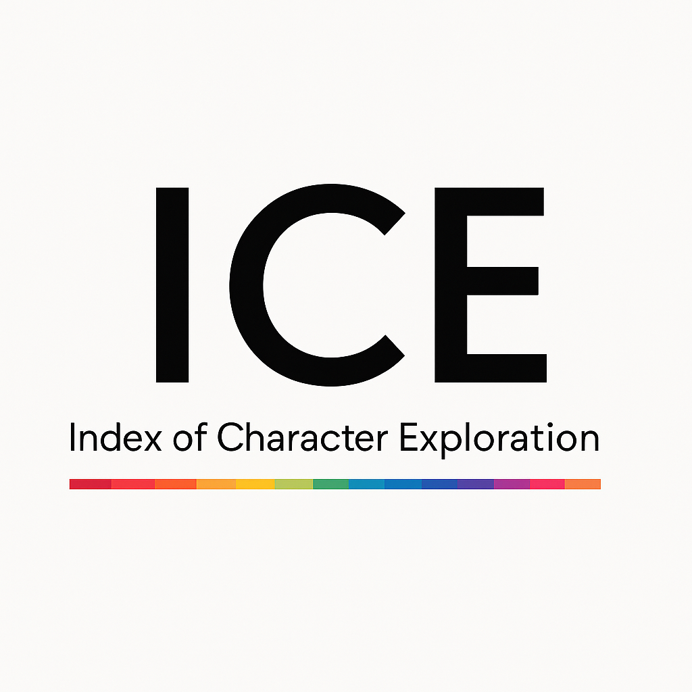

Index of Character Exploration
── 性格の理解を探求するための道しるべ
SNSなどで16性格タイプに関する情報はあふれていますが、
正しい知識を体系的に学ぶ場は、ほとんど存在しませんでした。
本資格は16性格タイプを学ぶ学校である16タイプアカデミーが提供する、
最初の資格試験です。
「MBTIは理論の名前でしょ？」
「16Personalitiesを受ければMBTIタイプがわかる」
「今年は2回目受けたらこのタイプに変わった」
「モテるMBTIランキング！」
「あの人とは性格の相性が良くない」
「INFPは引きこもり」
はじめて受験する方でも迷わないよう、用語と流れから丁寧に設計しています。
難易度はバニラ（入門）です。
SNSで広がる間違った知識を見抜けるようになることを目標とした試験です。
ICE認定試験(vanilla)
16性格診断認定試験
テーマ： SNSに広がる誤解を見抜く
理論の構造、歴史、用語、よくある誤解を整理します。
認知機能やスタック構造の基本と、その誤解を扱います。
各タイプの特徴、強み、コミュニケーション、認知スタイル等の傾向を問います。
診断の限界、活用の姿勢や間違った使い方、活用時の注意点を問います。
学習の成果を公式に示す合格証書をデジタルで発行します。あなたの知識が、客観的な証明として残ります。
16タイプアカデミー（学校）のDiscord上で、合格者専用バッジ（ロール）が付与されます。16タイプに関する十分な知識を身につけたことの証として、コミュニティ内で一目でわかります。
決済ページから受験を申し込みます。
16タイプアカデミーのDiscordサーバーに参加します。
Discordの学校内で、オンライン試験を受験します。
採点結果を確認します。
デジタル合格証書と、Discord上の合格者専用バッジ（ロール）を受け取れます。
Discordは、音声・テキスト・画面共有でつながるコミュニティ向けのチャットアプリです。海外ではゲームから学習コミュニティまで幅広く使われており、国内でも学習やコミュニティの場として使われることが増えています。本試験も16タイプアカデミーの学校（サーバー）内で受験から結果確認まで行います。
はじめてでも大丈夫。PC・スマホどちらでも参加できます。
16性格タイプを、知るだけでなく、使いこなすための学校です。
毎日クイズ（予定）や、校長への質問などもできる学びの場を用意しています（コンテンツは現在作成中です）。
ラベルではなく、理解で人を分ける。16タイプは「武器」であり「言い訳」ではない。
誤解を量産するSNSの向こう側で、正しい知識と倫理を持つ人が増えれば、対話は静かに強くなる。私たちは、そのための学校であり、試験であり、コミュニティである。